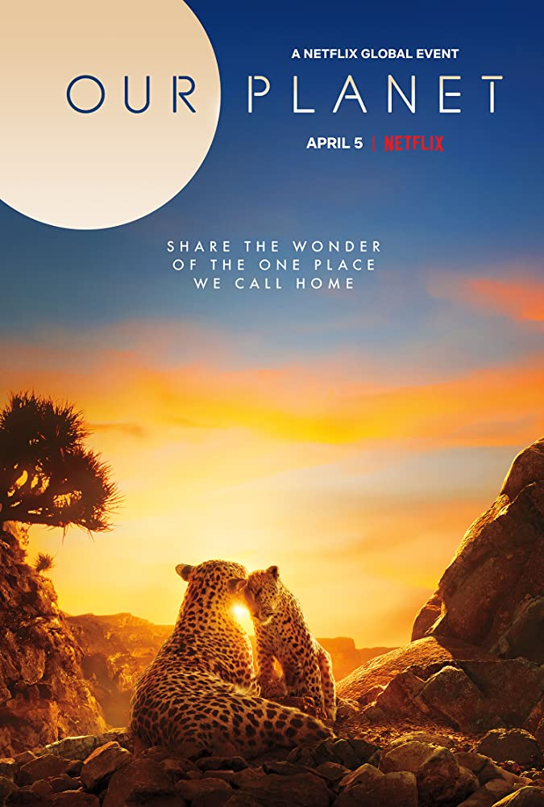
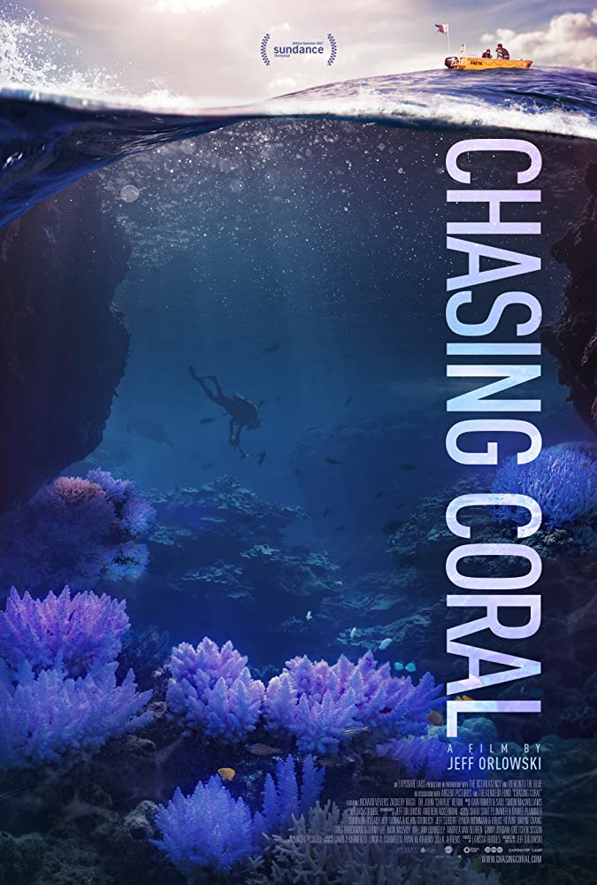

Our Planet
Deskripsi OUR PLANET
Street Food: Asia

Deskripsi STREET FOOD ASIA
Tidying Up with Marie Kondo
Deskripsi TIDYING UP WITH MARIE KONDO
Chasing Coral
Deskripsi CHASING CORAL
Memasuki kalender akademik libur sekolah, Kementerian Pendidikan dan Kebudayaan (Kemendikbud) hari ini mengumumkan kemitraan dengan penyedia layanan hiburan streaming kelas dunia, Netflix. Sebagai bagian dari program Belajar dari Rumah dan untuk pertama kalinya di dunia, film-film dokumenter Netflix akan ditayangkan melalui saluran televisi.
Mulai 20 Juni 2020, film-film dokumenter persembahan Netflix akan tayang perdana setiap Sabtu pukul 21.30 WIB dan tayang ulang setiap Minggu dan Rabu pada pukul 09.00 WIB. Tayangan-tayangan ini akan disiarkan secara terestrial melalui Televisi Republik Indonesia (TVRI).
Program Belajar dari Rumah yang diluncurkan 12 April 2020 merupakan alternatif belajar di tengah pandemi virus corona (COVID-19). Upaya ini dilakukan Kemendikbud untuk memastikan agar dalam masa yang sulit ini masyarakat terus mendapatkan kesempatan untuk melakukan pembelajaran dari rumah, salah satunya melalui media televisi dengan jangkauan terluas di Indonesia.
Deskripsi OUR PLANET
Deskripsi STREET FOOD ASIA
Deskripsi TIDYING UP WITH MARIE KONDO
Deskripsi CHASING CORAL
Orang 1
Orang 2
Orang 3
Orang 4
Orang 5